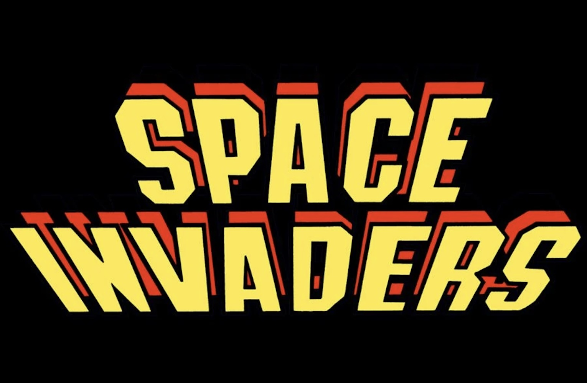

Following the early launch titles on the Atari 2600, Space Invaders became one of the first major arcade games to be successfully adapted to the console. Originally released in 1978 by Taito as an arcade game, it introduced a more intense and fast-paced style of gameplay compared to earlier home console experiences.

HOW TO PLAY:
THE PLAYER CONTROLS A LASER CANNON AT THE BOTTOM OF THE SCREEN, FIRING UPWARD AT ROWS OF DESCENDING ALIEN ENEMIES. AS THE PLAYER DESTROYS MORE INVADERS, THE REMAINING ONES SPEED UP, CREATING ESCALATING PRESSURE.
Key reasons it stood out:
ONE OF THE FIRST GAMES WITH PROGRESSIVE DIFFICULTY INSTEAD OF A STATIC LOOP
FEATURED SIMPLE BUT RECOGNIZABLE ALIEN SPRITES, WHICH BECAME ICONIC
ITS SUCCESS ON THE ATARI 2600 PROVED THE POTENTIAL OF CARTRIDGE-BASED GAME EXPANSION